Summary
This experiment investigates http/2 stream multiplexing. Full factorial of max concurrent streams, window size, header table size, and priority for page load time.
The design varies 4 factors: max concurrent streams (streams), ranging from 50 to 250, window size kb (KB), ranging from 64 to 1024, header table kb (KB), ranging from 4 to 64, and priority enabled, ranging from off to on. The goal is to optimize 2 responses: page load ms (ms) (minimize) and ttfb ms (ms) (minimize). Fixed conditions held constant across all runs include tls = 1.3, server = nginx.
A full factorial design was used to explore all 16 possible combinations of the 4 factors at two levels. This guarantees that every main effect and interaction can be estimated independently, at the cost of a larger experiment (16 runs).
Quadratic response surface models were fitted to capture potential curvature and factor interactions. The RSM contour plots below visualize how pairs of factors jointly affect each response.
Key Findings
For page load ms, the most influential factors were max concurrent streams (44.8%), header table kb (21.3%), window size kb (19.0%). The best observed value was 768.0 (at max concurrent streams = 250, window size kb = 64, header table kb = 4).
For ttfb ms, the most influential factors were max concurrent streams (43.8%), priority enabled (38.5%), header table kb (15.1%). The best observed value was 59.0 (at max concurrent streams = 250, window size kb = 64, header table kb = 4).
Recommended Next Steps
- Consider whether any fixed factors should be varied in a future study.
Experimental Setup
Factors
| Factor | Low | High | Unit |
|---|
max_concurrent_streams | 50 | 250 | streams |
window_size_kb | 64 | 1024 | KB |
header_table_kb | 4 | 64 | KB |
priority_enabled | off | on | |
Fixed: tls = 1.3, server = nginx
Responses
| Response | Direction | Unit |
|---|
page_load_ms | ↓ minimize | ms |
ttfb_ms | ↓ minimize | ms |
Configuration
{
"metadata": {
"name": "HTTP/2 Stream Multiplexing",
"description": "Full factorial of max concurrent streams, window size, header table size, and priority for page load time"
},
"factors": [
{
"name": "max_concurrent_streams",
"levels": [
"50",
"250"
],
"type": "continuous",
"unit": "streams"
},
{
"name": "window_size_kb",
"levels": [
"64",
"1024"
],
"type": "continuous",
"unit": "KB"
},
{
"name": "header_table_kb",
"levels": [
"4",
"64"
],
"type": "continuous",
"unit": "KB"
},
{
"name": "priority_enabled",
"levels": [
"off",
"on"
],
"type": "categorical",
"unit": ""
}
],
"fixed_factors": {
"tls": "1.3",
"server": "nginx"
},
"responses": [
{
"name": "page_load_ms",
"optimize": "minimize",
"unit": "ms"
},
{
"name": "ttfb_ms",
"optimize": "minimize",
"unit": "ms"
}
],
"settings": {
"operation": "full_factorial",
"test_script": "use_cases/54_http2_stream_multiplexing/sim.sh"
}
}
Experimental Matrix
The Full Factorial Design produces 16 runs. Each row is one experiment with specific factor settings.
| Run | max_concurrent_streams | window_size_kb | header_table_kb | priority_enabled |
|---|
| 1 | 50 | 1024 | 64 | on |
| 2 | 250 | 64 | 4 | on |
| 3 | 50 | 1024 | 4 | on |
| 4 | 50 | 1024 | 64 | off |
| 5 | 250 | 1024 | 64 | off |
| 6 | 250 | 64 | 64 | off |
| 7 | 250 | 1024 | 4 | off |
| 8 | 250 | 64 | 4 | off |
| 9 | 50 | 64 | 4 | on |
| 10 | 50 | 64 | 64 | off |
| 11 | 250 | 1024 | 4 | on |
| 12 | 250 | 1024 | 64 | on |
| 13 | 50 | 1024 | 4 | off |
| 14 | 250 | 64 | 64 | on |
| 15 | 50 | 64 | 4 | off |
| 16 | 50 | 64 | 64 | on |
Step-by-Step Workflow
1
Preview the design
$ doe info --config use_cases/54_http2_stream_multiplexing/config.json
2
Generate the runner script
$ doe generate --config use_cases/54_http2_stream_multiplexing/config.json \
--output use_cases/54_http2_stream_multiplexing/results/run.sh --seed 42
3
Execute the experiments
$ bash use_cases/54_http2_stream_multiplexing/results/run.sh
4
Analyze results
$ doe analyze --config use_cases/54_http2_stream_multiplexing/config.json
5
Get optimization recommendations
$ doe optimize --config use_cases/54_http2_stream_multiplexing/config.json
6
Multi-objective optimization
With 2 competing responses, use --multi to find the best compromise via Derringer–Suich desirability.
$ doe optimize --config use_cases/54_http2_stream_multiplexing/config.json --multi
7
Generate the HTML report
$ doe report --config use_cases/54_http2_stream_multiplexing/config.json \
--output use_cases/54_http2_stream_multiplexing/results/report.html
Features Exercised
| Feature | Value |
|---|
| Design type | full_factorial |
| Factor types | continuous (3), categorical (1) |
| Arg style | double-dash |
| Responses | 2 (page_load_ms ↓, ttfb_ms ↓) |
| Total runs | 16 |
Analysis Results
Generated from actual experiment runs using the DOE Helper Tool.
Response: page_load_ms
Top factors: max_concurrent_streams (44.8%), header_table_kb (21.3%), window_size_kb (19.0%).
ANOVA
| Source | DF | SS | MS | F | p-value |
|---|
| Source | DF | SS | MS | F | p-value |
| max_concurrent_streams | 1 | 336690.0625 | 336690.0625 | 3.942 | 0.1039 |
| window_size_kb | 1 | 60639.0625 | 60639.0625 | 0.710 | 0.4379 |
| header_table_kb | 1 | 76314.0625 | 76314.0625 | 0.893 | 0.3879 |
| priority_enabled | 1 | 37539.0625 | 37539.0625 | 0.440 | 0.5367 |
| max_concurrent_streams*window_size_kb | 1 | 316125.0625 | 316125.0625 | 3.701 | 0.1124 |
| max_concurrent_streams*header_table_kb | 1 | 62375.0625 | 62375.0625 | 0.730 | 0.4318 |
| max_concurrent_streams*priority_enabled | 1 | 517.5625 | 517.5625 | 0.006 | 0.9410 |
| window_size_kb*header_table_kb | 1 | 64135.5625 | 64135.5625 | 0.751 | 0.4258 |
| window_size_kb*priority_enabled | 1 | 5365.5625 | 5365.5625 | 0.063 | 0.8121 |
| header_table_kb*priority_enabled | 1 | 612.5625 | 612.5625 | 0.007 | 0.9358 |
| Error | 5 | 427059.3125 | 85411.8625 | | |
| Total | 15 | 1387372.9375 | 92491.5292 | | |
Pareto Chart
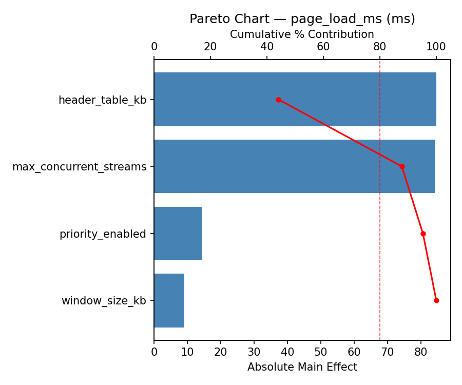
Main Effects Plot

Normal Probability Plot of Effects
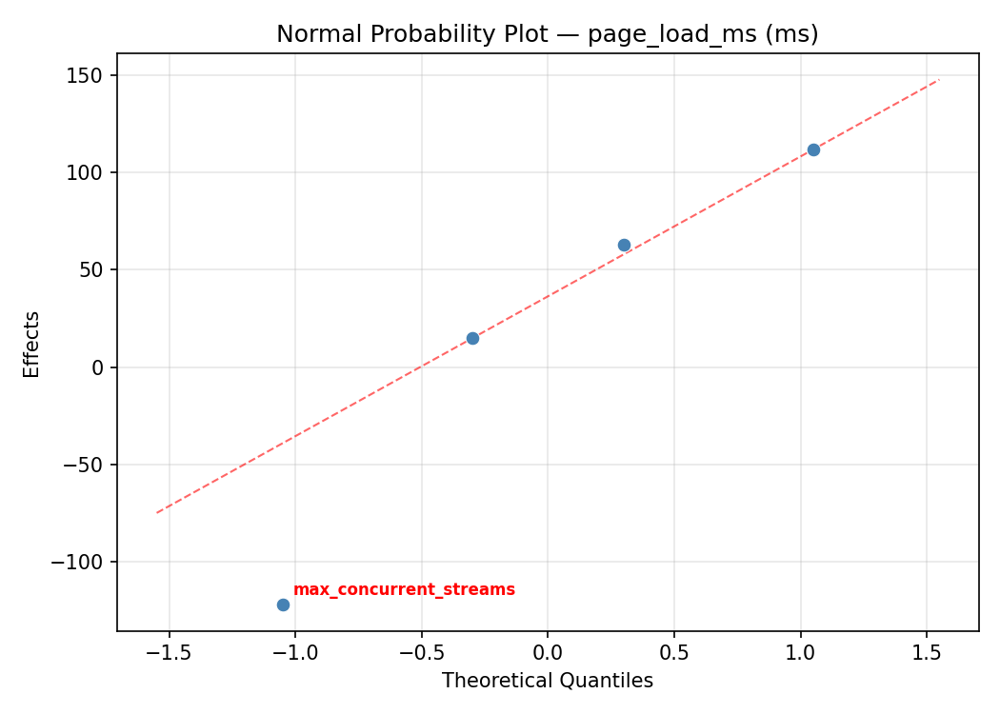
Half-Normal Plot of Effects
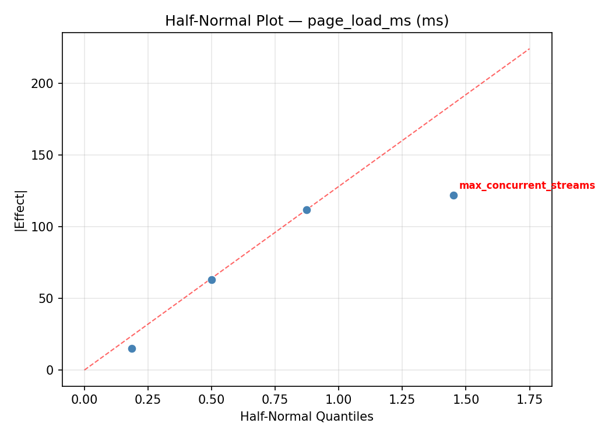
Model Diagnostics
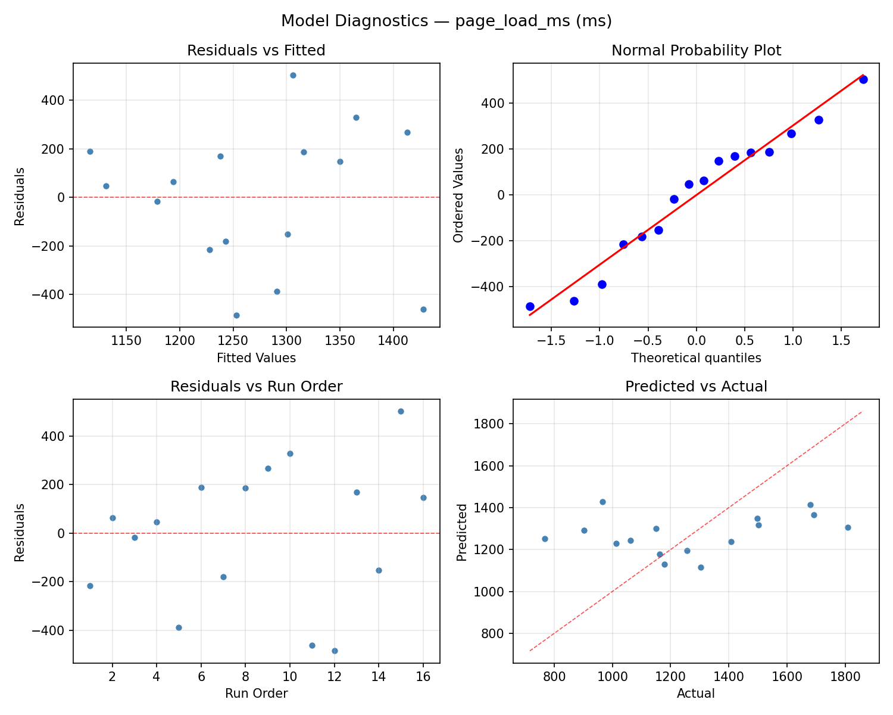
Response: ttfb_ms
Top factors: max_concurrent_streams (43.8%), priority_enabled (38.5%), header_table_kb (15.1%).
ANOVA
| Source | DF | SS | MS | F | p-value |
|---|
| Source | DF | SS | MS | F | p-value |
| max_concurrent_streams | 1 | 3813.0625 | 3813.0625 | 2.198 | 0.1983 |
| window_size_kb | 1 | 14.0625 | 14.0625 | 0.008 | 0.9318 |
| header_table_kb | 1 | 451.5625 | 451.5625 | 0.260 | 0.6316 |
| priority_enabled | 1 | 2943.0625 | 2943.0625 | 1.697 | 0.2495 |
| max_concurrent_streams*window_size_kb | 1 | 7525.5625 | 7525.5625 | 4.339 | 0.0917 |
| max_concurrent_streams*header_table_kb | 1 | 540.5625 | 540.5625 | 0.312 | 0.6007 |
| max_concurrent_streams*priority_enabled | 1 | 248.0625 | 248.0625 | 0.143 | 0.7208 |
| window_size_kb*header_table_kb | 1 | 689.0625 | 689.0625 | 0.397 | 0.5562 |
| window_size_kb*priority_enabled | 1 | 22.5625 | 22.5625 | 0.013 | 0.9136 |
| header_table_kb*priority_enabled | 1 | 126.5625 | 126.5625 | 0.073 | 0.7979 |
| Error | 5 | 8672.8125 | 1734.5625 | | |
| Total | 15 | 25046.9375 | 1669.7958 | | |
Pareto Chart

Main Effects Plot

Normal Probability Plot of Effects
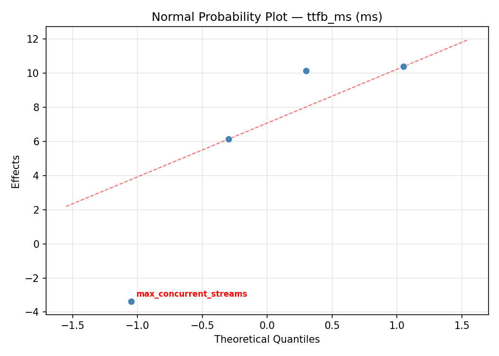
Half-Normal Plot of Effects
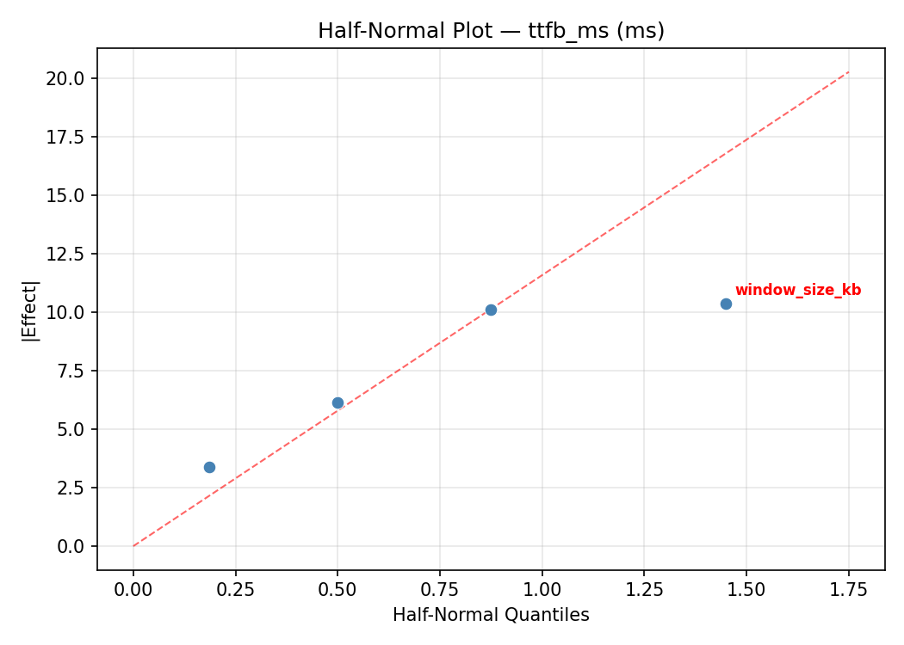
Model Diagnostics
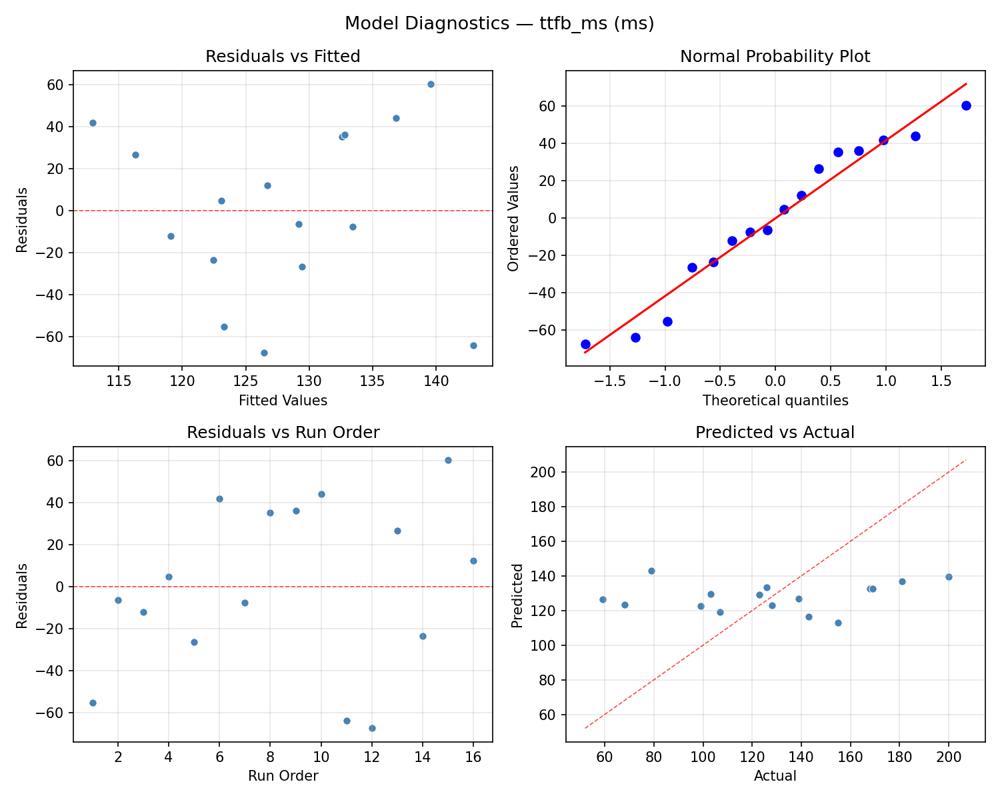
Response Surface Plots
3D surfaces fitted with quadratic RSM. Red dots are observed data points.
page load ms max concurrent streams vs header table kb
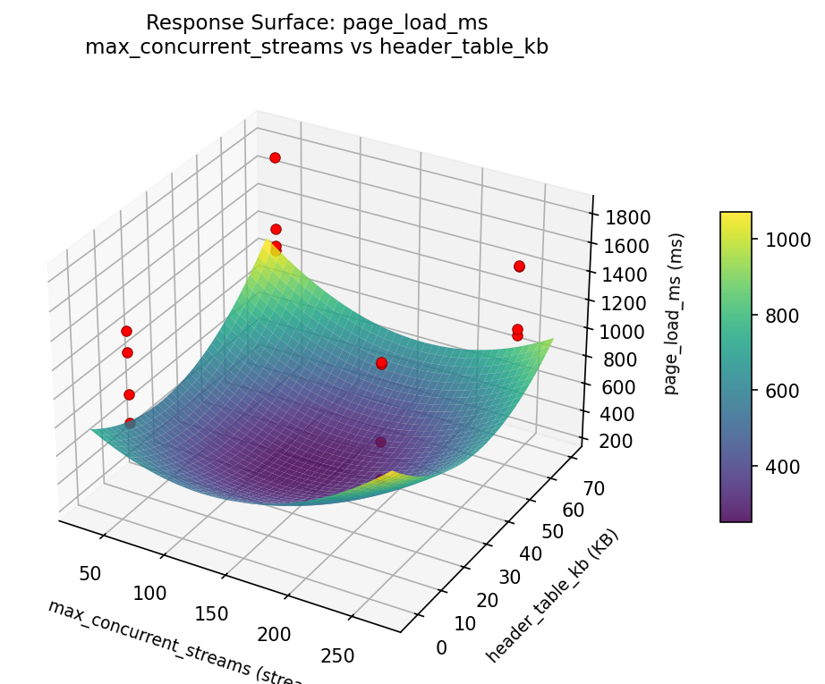
page load ms max concurrent streams vs window size kb
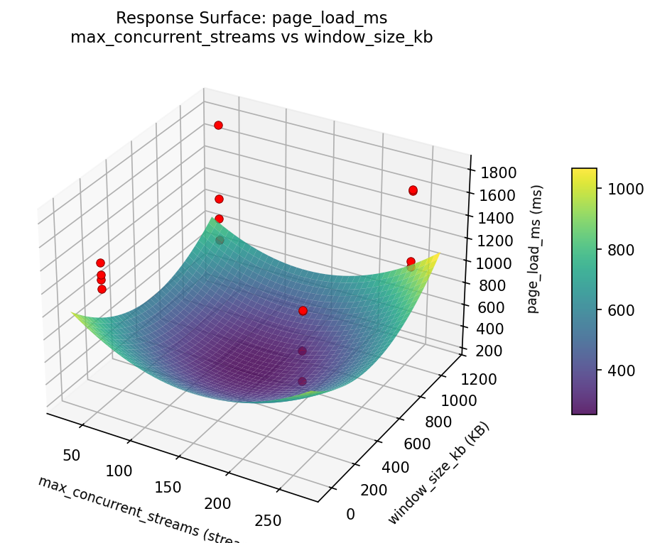
page load ms window size kb vs header table kb
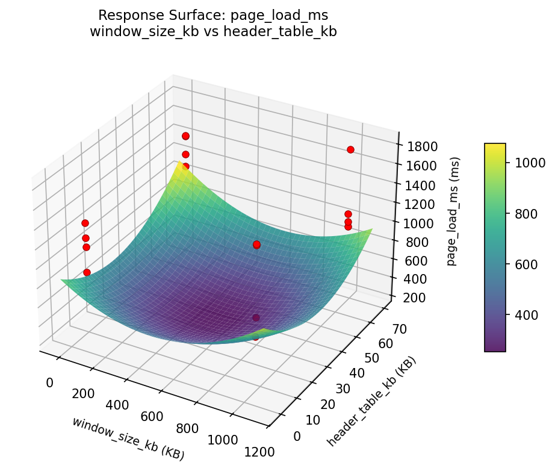
ttfb ms max concurrent streams vs header table kb

ttfb ms max concurrent streams vs window size kb
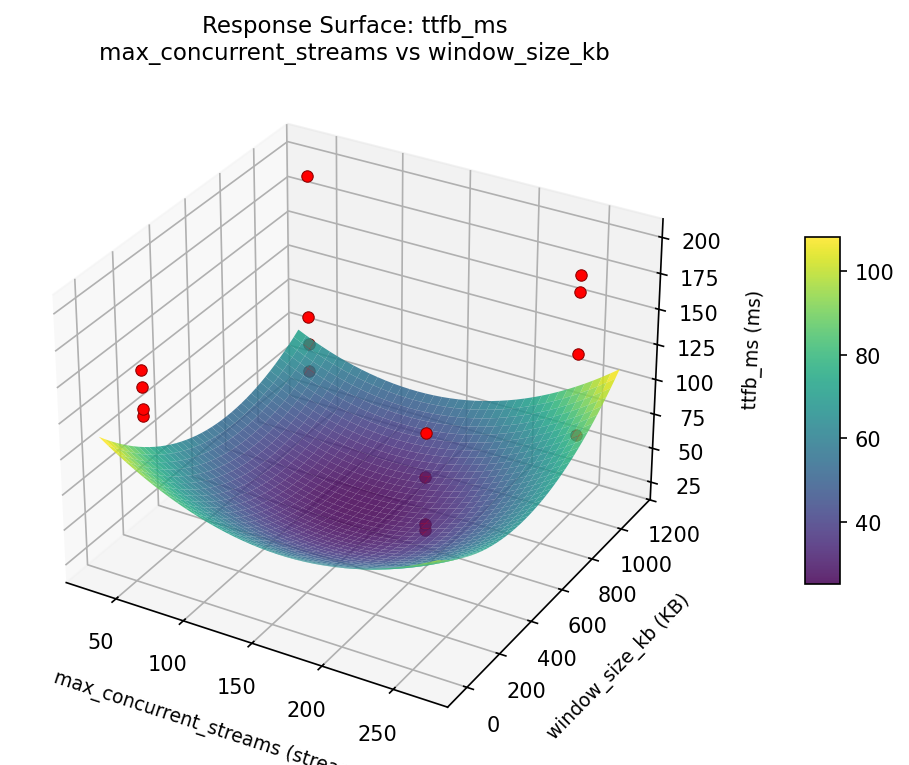
ttfb ms window size kb vs header table kb
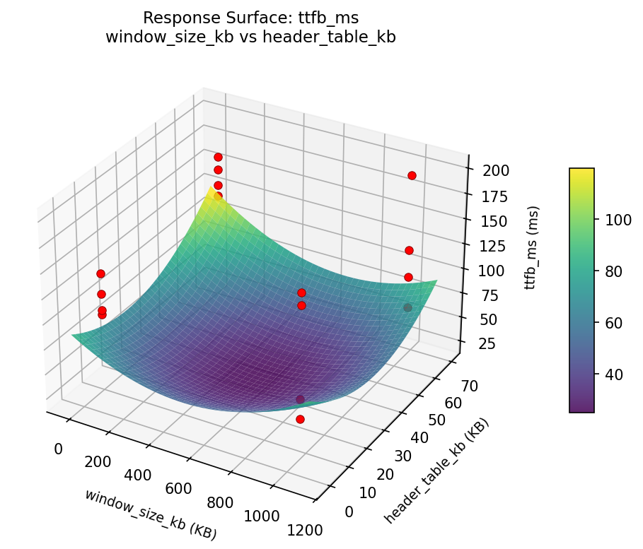
Multi-Objective Optimization
When responses compete, Derringer–Suich desirability finds the best compromise.
Each response is scaled to a 0–1 desirability, then combined via a weighted geometric mean.
Overall Desirability
D = 0.9545
Per-Response Desirability
| Response | Weight | Desirability | Predicted | Dir |
|---|
page_load_ms |
1.5 |
|
768.00 0.9545 768.00 ms |
↓ |
ttfb_ms |
1.0 |
|
59.00 0.9545 59.00 ms |
↓ |
Recommended Settings
| Factor | Value |
|---|
max_concurrent_streams | 250 streams |
window_size_kb | 64 KB |
header_table_kb | 4 KB |
priority_enabled | off |
Source: from observed run #12
Trade-off Summary
Sacrifice = how much worse than single-objective best.
| Response | Predicted | Best Observed | Sacrifice |
|---|
ttfb_ms | 59.00 | 59.00 | +0.00 |
Top 3 Runs by Desirability
| Run | D | Factor Settings |
|---|
| #1 | 0.8000 | max_concurrent_streams=50, window_size_kb=1024, header_table_kb=64, priority_enabled=on |
| #11 | 0.7989 | max_concurrent_streams=50, window_size_kb=1024, header_table_kb=64, priority_enabled=off |
Model Quality
| Response | R² | Type |
|---|
ttfb_ms | 0.3108 | linear |
Full Multi-Objective Output
============================================================
MULTI-OBJECTIVE OPTIMIZATION
Method: Derringer-Suich Desirability Function
============================================================
Overall desirability: D = 0.9545
Response Weight Desirability Predicted Direction
---------------------------------------------------------------------
page_load_ms 1.5 0.9545 768.00 ms ↓
ttfb_ms 1.0 0.9545 59.00 ms ↓
Recommended settings:
max_concurrent_streams = 250 streams
window_size_kb = 64 KB
header_table_kb = 4 KB
priority_enabled = off
(from observed run #12)
Trade-off summary:
page_load_ms: 768.00 (best observed: 768.00, sacrifice: +0.00)
ttfb_ms: 59.00 (best observed: 59.00, sacrifice: +0.00)
Model quality:
page_load_ms: R² = 0.3714 (linear)
ttfb_ms: R² = 0.3108 (linear)
Top 3 observed runs by overall desirability:
1. Run #12 (D=0.9545): max_concurrent_streams=250, window_size_kb=64, header_table_kb=4, priority_enabled=off
2. Run #1 (D=0.8000): max_concurrent_streams=50, window_size_kb=1024, header_table_kb=64, priority_enabled=on
3. Run #11 (D=0.7989): max_concurrent_streams=50, window_size_kb=1024, header_table_kb=64, priority_enabled=off
Full Analysis Output
=== Main Effects: page_load_ms ===
Factor Effect Std Error % Contribution
--------------------------------------------------------------
max_concurrent_streams -290.1250 76.0311 44.8%
header_table_kb 138.1250 76.0311 21.3%
window_size_kb -123.1250 76.0311 19.0%
priority_enabled -96.8750 76.0311 14.9%
=== ANOVA Table: page_load_ms ===
Source DF SS MS F p-value
-----------------------------------------------------------------------------
max_concurrent_streams 1 336690.0625 336690.0625 3.942 0.1039
window_size_kb 1 60639.0625 60639.0625 0.710 0.4379
header_table_kb 1 76314.0625 76314.0625 0.893 0.3879
priority_enabled 1 37539.0625 37539.0625 0.440 0.5367
max_concurrent_streams*window_size_kb 1 316125.0625 316125.0625 3.701 0.1124
max_concurrent_streams*header_table_kb 1 62375.0625 62375.0625 0.730 0.4318
max_concurrent_streams*priority_enabled 1 517.5625 517.5625 0.006 0.9410
window_size_kb*header_table_kb 1 64135.5625 64135.5625 0.751 0.4258
window_size_kb*priority_enabled 1 5365.5625 5365.5625 0.063 0.8121
header_table_kb*priority_enabled 1 612.5625 612.5625 0.007 0.9358
Error 5 427059.3125 85411.8625
Total 15 1387372.9375 92491.5292
=== Interaction Effects: page_load_ms ===
Factor A Factor B Interaction % Contribution
------------------------------------------------------------------------
max_concurrent_streams window_size_kb -281.1250 47.4%
window_size_kb header_table_kb 126.6250 21.4%
max_concurrent_streams header_table_kb -124.8750 21.1%
window_size_kb priority_enabled 36.6250 6.2%
header_table_kb priority_enabled 12.3750 2.1%
max_concurrent_streams priority_enabled -11.3750 1.9%
=== Summary Statistics: page_load_ms ===
max_concurrent_streams:
Level N Mean Std Min Max
------------------------------------------------------------
250 8 1417.0000 293.8683 1012.0000 1809.0000
50 8 1126.8750 252.4658 768.0000 1502.0000
window_size_kb:
Level N Mean Std Min Max
------------------------------------------------------------
1024 8 1333.5000 224.7958 1012.0000 1680.0000
64 8 1210.3750 372.8274 768.0000 1809.0000
header_table_kb:
Level N Mean Std Min Max
------------------------------------------------------------
4 8 1202.8750 239.3309 768.0000 1502.0000
64 8 1341.0000 360.5757 903.0000 1809.0000
priority_enabled:
Level N Mean Std Min Max
------------------------------------------------------------
off 8 1320.3750 285.7306 903.0000 1693.0000
on 8 1223.5000 333.4538 768.0000 1809.0000
=== Main Effects: ttfb_ms ===
Factor Effect Std Error % Contribution
--------------------------------------------------------------
max_concurrent_streams -30.8750 10.2158 43.8%
priority_enabled -27.1250 10.2158 38.5%
header_table_kb 10.6250 10.2158 15.1%
window_size_kb 1.8750 10.2158 2.7%
=== ANOVA Table: ttfb_ms ===
Source DF SS MS F p-value
-----------------------------------------------------------------------------
max_concurrent_streams 1 3813.0625 3813.0625 2.198 0.1983
window_size_kb 1 14.0625 14.0625 0.008 0.9318
header_table_kb 1 451.5625 451.5625 0.260 0.6316
priority_enabled 1 2943.0625 2943.0625 1.697 0.2495
max_concurrent_streams*window_size_kb 1 7525.5625 7525.5625 4.339 0.0917
max_concurrent_streams*header_table_kb 1 540.5625 540.5625 0.312 0.6007
max_concurrent_streams*priority_enabled 1 248.0625 248.0625 0.143 0.7208
window_size_kb*header_table_kb 1 689.0625 689.0625 0.397 0.5562
window_size_kb*priority_enabled 1 22.5625 22.5625 0.013 0.9136
header_table_kb*priority_enabled 1 126.5625 126.5625 0.073 0.7979
Error 5 8672.8125 1734.5625
Total 15 25046.9375 1669.7958
=== Interaction Effects: ttfb_ms ===
Factor A Factor B Interaction % Contribution
------------------------------------------------------------------------
max_concurrent_streams window_size_kb -43.3750 51.6%
window_size_kb header_table_kb 13.1250 15.6%
max_concurrent_streams header_table_kb -11.6250 13.8%
max_concurrent_streams priority_enabled -7.8750 9.4%
header_table_kb priority_enabled 5.6250 6.7%
window_size_kb priority_enabled 2.3750 2.8%
=== Summary Statistics: ttfb_ms ===
max_concurrent_streams:
Level N Mean Std Min Max
------------------------------------------------------------
250 8 143.3750 42.5506 68.0000 200.0000
50 8 112.5000 34.9694 59.0000 168.0000
window_size_kb:
Level N Mean Std Min Max
------------------------------------------------------------
1024 8 127.0000 34.8999 68.0000 169.0000
64 8 128.8750 48.5605 59.0000 200.0000
header_table_kb:
Level N Mean Std Min Max
------------------------------------------------------------
4 8 122.6250 34.3633 59.0000 168.0000
64 8 133.2500 48.2989 68.0000 200.0000
priority_enabled:
Level N Mean Std Min Max
------------------------------------------------------------
off 8 141.5000 30.3692 103.0000 181.0000
on 8 114.3750 47.2801 59.0000 200.0000
Optimization Recommendations
=== Optimization: page_load_ms ===
Direction: minimize
Best observed run: #12
max_concurrent_streams = 250
window_size_kb = 64
header_table_kb = 4
priority_enabled = on
Value: 768.0
RSM Model (linear, R² = 0.5404, Adj R² = 0.3732):
Coefficients:
intercept +1271.9375
max_concurrent_streams +13.4375
window_size_kb +78.0625
header_table_kb +75.0625
priority_enabled -186.9375
RSM Model (quadratic, R² = 0.6099, Adj R² = -4.8519):
Coefficients:
intercept +254.3875
max_concurrent_streams +13.4375
window_size_kb +78.0625
header_table_kb +75.0625
priority_enabled -186.9375
max_concurrent_streams*window_size_kb -50.4375
max_concurrent_streams*header_table_kb +42.3125
max_concurrent_streams*priority_enabled -35.9375
window_size_kb*header_table_kb -19.3125
window_size_kb*priority_enabled -4.3125
header_table_kb*priority_enabled -3.3125
max_concurrent_streams^2 +254.3875
window_size_kb^2 +254.3875
header_table_kb^2 +254.3875
priority_enabled^2 +254.3875
Curvature analysis:
max_concurrent_streams coef=+254.3875 convex (has a minimum)
window_size_kb coef=+254.3875 convex (has a minimum)
header_table_kb coef=+254.3875 convex (has a minimum)
priority_enabled coef=+254.3875 convex (has a minimum)
Notable interactions:
max_concurrent_streams*window_size_kb coef=-50.4375 (antagonistic)
max_concurrent_streams*header_table_kb coef=+42.3125 (synergistic)
max_concurrent_streams*priority_enabled coef=-35.9375 (antagonistic)
window_size_kb*header_table_kb coef=-19.3125 (antagonistic)
window_size_kb*priority_enabled coef=-4.3125 (antagonistic)
header_table_kb*priority_enabled coef=-3.3125 (antagonistic)
Predicted optimum (from linear model, at observed points):
max_concurrent_streams = 250
window_size_kb = 1024
header_table_kb = 64
priority_enabled = off
Predicted value: 1625.4375
Surface optimum (via L-BFGS-B, linear model):
max_concurrent_streams = 50
window_size_kb = 64
header_table_kb = 4
priority_enabled = on
Predicted value: 918.4375
Model quality: Moderate fit — use predictions directionally, not precisely.
Factor importance:
1. priority_enabled (effect: -373.9, contribution: 52.9%)
2. window_size_kb (effect: -156.1, contribution: 22.1%)
3. header_table_kb (effect: 150.1, contribution: 21.2%)
4. max_concurrent_streams (effect: -26.9, contribution: 3.8%)
=== Optimization: ttfb_ms ===
Direction: minimize
Best observed run: #12
max_concurrent_streams = 250
window_size_kb = 64
header_table_kb = 4
priority_enabled = on
Value: 59.0
RSM Model (linear, R² = 0.4027, Adj R² = 0.1855):
Coefficients:
intercept +127.9375
max_concurrent_streams -3.9375
window_size_kb +10.5625
header_table_kb +8.0625
priority_enabled -20.9375
RSM Model (quadratic, R² = 0.4927, Adj R² = -6.6095):
Coefficients:
intercept +25.5875
max_concurrent_streams -3.9375
window_size_kb +10.5625
header_table_kb +8.0625
priority_enabled -20.9375
max_concurrent_streams*window_size_kb -9.0625
max_concurrent_streams*header_table_kb +0.6875
max_concurrent_streams*priority_enabled -4.0625
window_size_kb*header_table_kb -6.0625
window_size_kb*priority_enabled +0.4375
header_table_kb*priority_enabled +2.1875
max_concurrent_streams^2 +25.5875
window_size_kb^2 +25.5875
header_table_kb^2 +25.5875
priority_enabled^2 +25.5875
Curvature analysis:
max_concurrent_streams coef=+25.5875 convex (has a minimum)
window_size_kb coef=+25.5875 convex (has a minimum)
header_table_kb coef=+25.5875 convex (has a minimum)
priority_enabled coef=+25.5875 convex (has a minimum)
Notable interactions:
max_concurrent_streams*window_size_kb coef=-9.0625 (antagonistic)
window_size_kb*header_table_kb coef=-6.0625 (antagonistic)
max_concurrent_streams*priority_enabled coef=-4.0625 (antagonistic)
header_table_kb*priority_enabled coef=+2.1875 (synergistic)
max_concurrent_streams*header_table_kb coef=+0.6875 (synergistic)
window_size_kb*priority_enabled coef=+0.4375 (synergistic)
Predicted optimum (from linear model, at observed points):
max_concurrent_streams = 50
window_size_kb = 1024
header_table_kb = 64
priority_enabled = off
Predicted value: 171.4375
Surface optimum (via L-BFGS-B, linear model):
max_concurrent_streams = 250
window_size_kb = 64
header_table_kb = 4
priority_enabled = on
Predicted value: 84.4375
Model quality: Weak fit — consider adding center points or using a different design.
Factor importance:
1. priority_enabled (effect: -41.9, contribution: 48.1%)
2. window_size_kb (effect: -21.1, contribution: 24.3%)
3. header_table_kb (effect: 16.1, contribution: 18.5%)
4. max_concurrent_streams (effect: 7.9, contribution: 9.1%)